Problemas de software
Problemas de software que encontramos durante a montagem e manutenção dos computadores, com as causas e como resolvemos cada um.
Windows ou Linux?
Os dois são sistemas operacionais: o programa principal do computador, que controla o hardware (as peças físicas) e permite que os outros programas funcionem. Por isso, cada problema desta página traz a solução nos dois sistemas.
Windows
Sistema da Microsoft, pago (com licença) e de código fechado. É o mais usado em computadores pessoais. As configurações ficam no aplicativo Configurações e no Painel de Controle, e os comandos são digitados no Prompt de Comando ou no PowerShell.
Linux
Sistema livre, gratuito e de código aberto, distribuído em versões chamadas
distribuições, como o Ubuntu, usado no laboratório. Os programas são instalados
por um gerenciador de pacotes (como o apt) e muitos ajustes são feitos no terminal, quase
sempre com sudo para ter permissão de administrador.
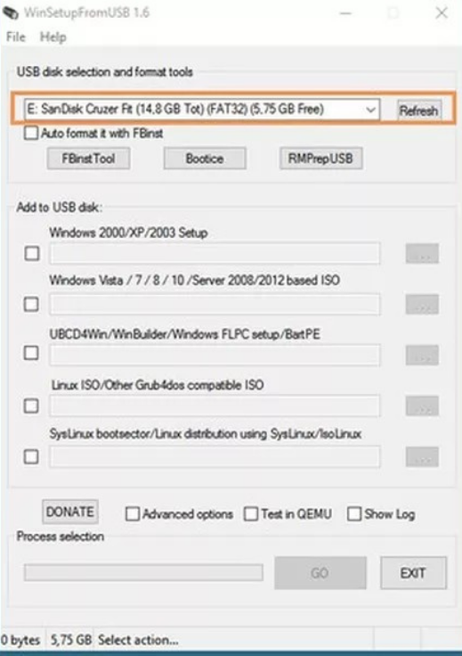
Erro de boot do Windows XP no Rufus e no Ventoy
O Windows XP não instalava pelo Rufus nem pelo Ventoy. Resolvemos usando o WinSetupFromUSB, que faz o pen drive simular um disco.
Ver solução ›
Sem internet
O computador não acessava a rede sem fio. Resolvemos instalando o driver da placa de rede Realtek pelo Gerenciador de dispositivos.
Ver solução ›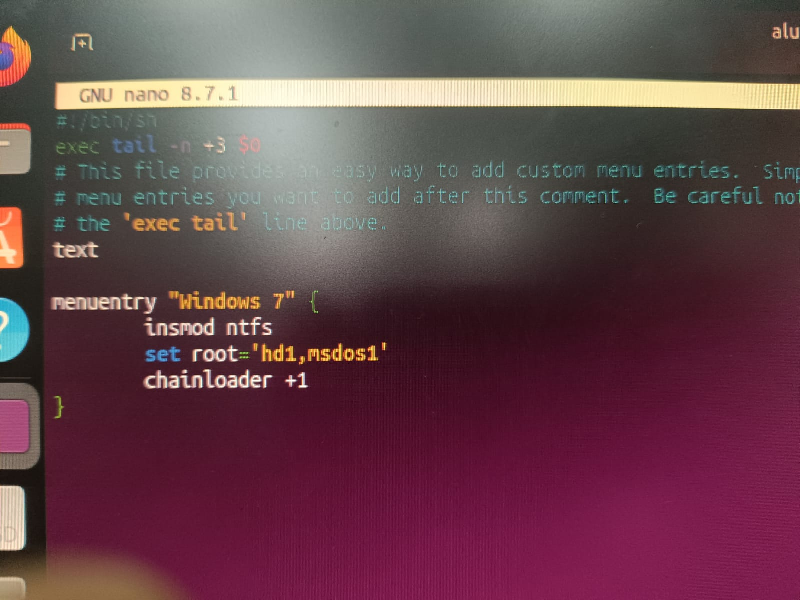
Menu de boot não aparece
O computador iniciava direto em um sistema, sem mostrar o menu de escolha. Resolvemos com o update-grub no Ubuntu e o EasyBCD no Windows.
Ver solução ›
Sistema operacional corrompido
Arquivos essenciais do sistema danificados por desligamento incorreto, vírus ou HD com defeito. O computador não inicia ou fica travando.
Ver solução ›
Drivers desatualizados ou corrompidos
Depois de formatar, peças antigas ficam sem driver e param de funcionar. Resolvemos baixando o driver certo no site do fabricante.
Ver solução ›
Sistema sem som
O som parava de sair, normalmente depois de conectar fone Bluetooth, monitor HDMI ou caixa de som. Resolvemos escolhendo a saída certa, reiniciando o serviço de áudio ou reinstalando o driver.
Ver solução ›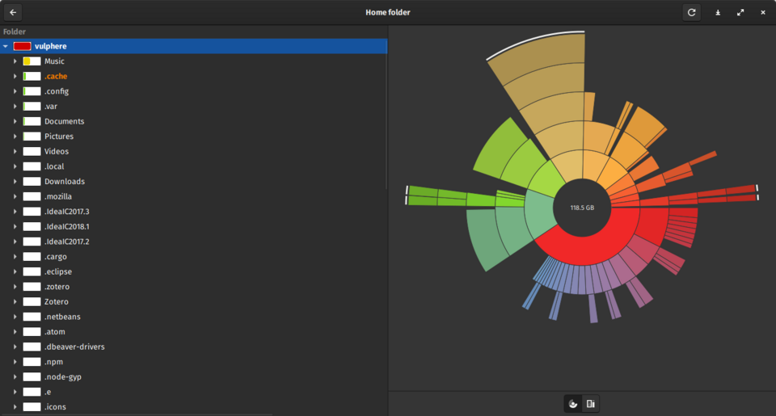
Espaço em disco ficando cheio sozinho
O disco C: enchia sem motivo por causa de arquivos temporários e pontos de restauração. Resolvemos com a Limpeza de Disco, limpando a pasta %temp% e ativando o Sensor de Armazenamento.
Ver solução ›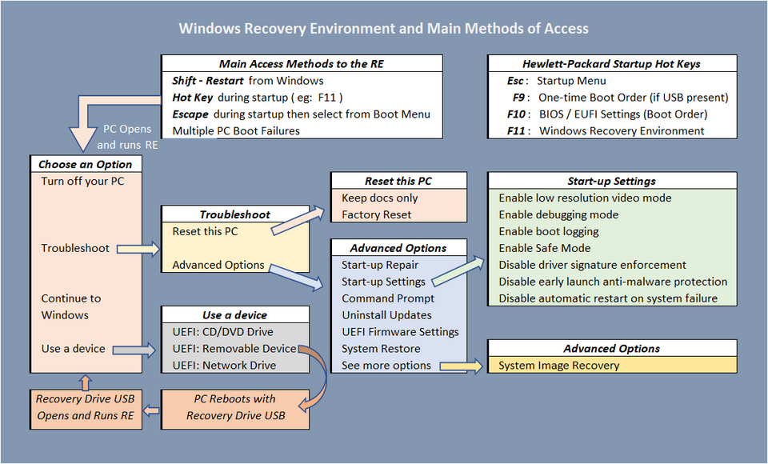
Loop de reparo automático
O Windows tentava se reparar sozinho, falhava e reiniciava sem parar. Resolvemos pelas Opções Avançadas, com Reparo de Inicialização, Restauração do Sistema ou os comandos bootrec.
Ver solução ›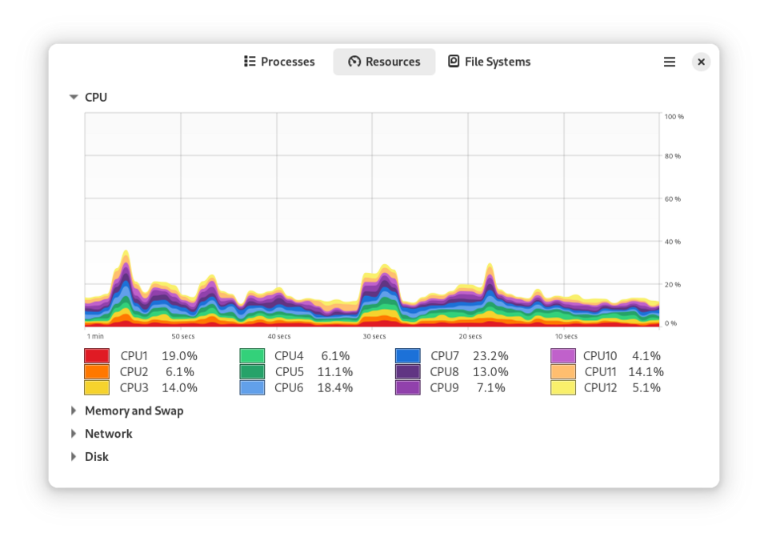
Arquivos ou pastas que não podem ser excluídos
O arquivo continuava aberto por algum processo em segundo plano. Resolvemos finalizando a tarefa no Gerenciador de Tarefas (Ctrl + Shift + Esc).
Ver solução ›
Mouse ou teclado não funciona
O dispositivo para de responder por mau contato na porta USB, pilhas fracas ou driver travado. Resolvemos trocando de porta, trocando as pilhas ou reinstalando o driver pelo Gerenciador de Dispositivos.
Ver solução ›
Impressora não imprime
A fila de impressão trava ou a impressora aparece como offline. Resolvemos limpando a fila, reiniciando o Spooler de Impressão e reinstalando o driver.
Ver solução ›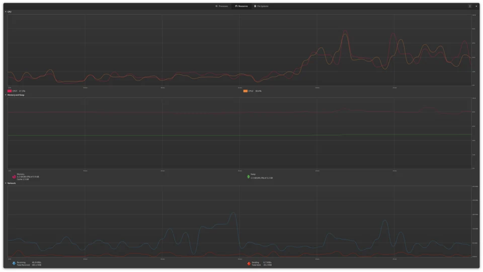
Programa não abre ou fecha sozinho
O aplicativo congela ou fecha logo ao iniciar. Resolvemos finalizando a tarefa, reinstalando o programa e usando o modo de compatibilidade.
Ver solução ›Ícones da área de trabalho sumidos ou desorganizados
Os ícones somem ou mudam de lugar sozinhos. Resolvemos pelas opções de Exibir da área de trabalho e reiniciando o Windows Explorer.
Ver solução ›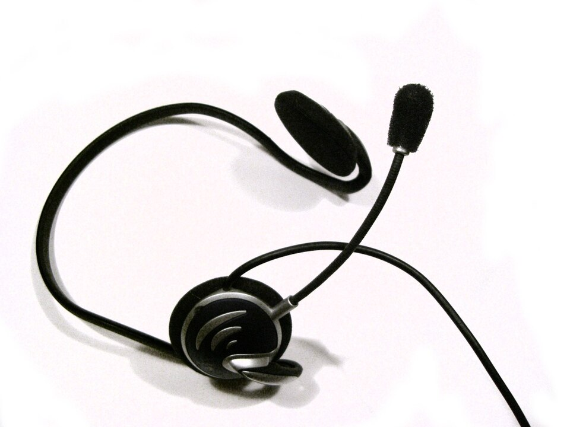
Volume baixo ou microfone sem funcionar
O áudio sai baixo ou o microfone não é detectado em chamadas. Resolvemos pelo Mixer de volume e liberando o acesso ao microfone nas configurações de privacidade.
Ver solução ›Tela preta após o login
A área de trabalho fica preta, só com o cursor do mouse, porque o Windows Explorer não abriu. Resolvemos abrindo o explorer.exe pelo Gerenciador de Tarefas e verificando os arquivos do sistema.
Ver solução ›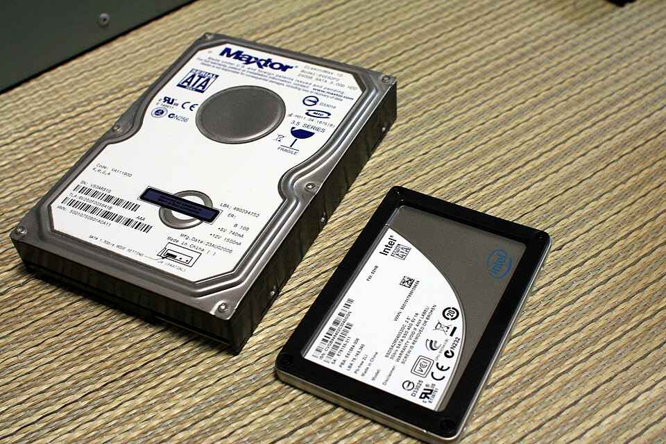
Inicialização lenta do sistema
O computador demora minutos para chegar à área de trabalho. Resolvemos desativando programas que abrem junto com o Windows e liberando espaço no disco.
Ver solução ›
Loop de reinicialização
O Windows começa a carregar e reinicia sozinho, sem parar. Resolvemos desativando o reinício automático para ler o erro e corrigindo a causa pelas Opções Avançadas.
Ver solução ›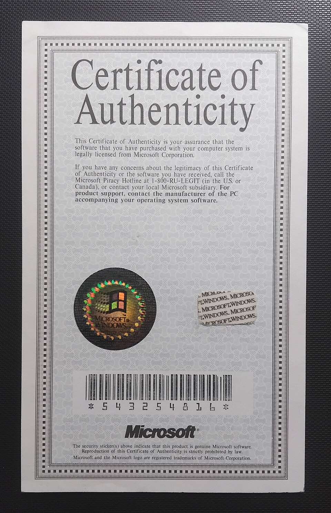
Falha na ativação da licença do sistema
O Windows ou o Office passa a dizer que a licença expirou ou não é original. Resolvemos pela tela de Ativação, conferindo a data do computador e a conta Microsoft do Office.
Ver solução ›
Aplicativos padrão redefinidos automaticamente
Depois de uma atualização, PDFs e links voltam a abrir em outro programa. Resolvemos escolhendo de novo em Aplicativos padrão ou pelo Abrir com.
Ver solução ›Erro de biblioteca ausente (DLL) ao iniciar um programa
Um jogo ou programa não abre por falta de arquivos como MSVCP140.dll. Resolvemos instalando ou reparando o Visual C++ Redistributable pelo site da Microsoft.
Ver solução ›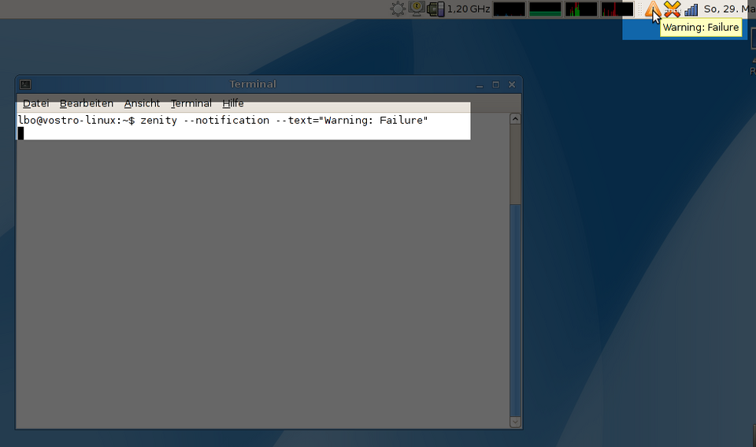
Notificações e Central de Ações travadas
O painel de notificações não abre ou os avisos ficam congelados na tela. Resolvemos reiniciando o Windows Explorer e conferindo o modo Não perturbe.
Ver solução ›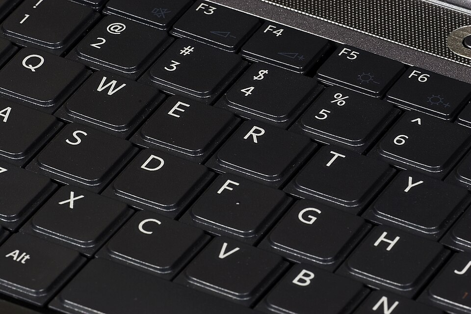
Atalhos do teclado não funcionam
Ctrl + C, Alt + Tab e os atalhos com a tecla Windows param de responder. Resolvemos desbloqueando a tecla Windows e desligando as Teclas de Aderência.
Ver solução ›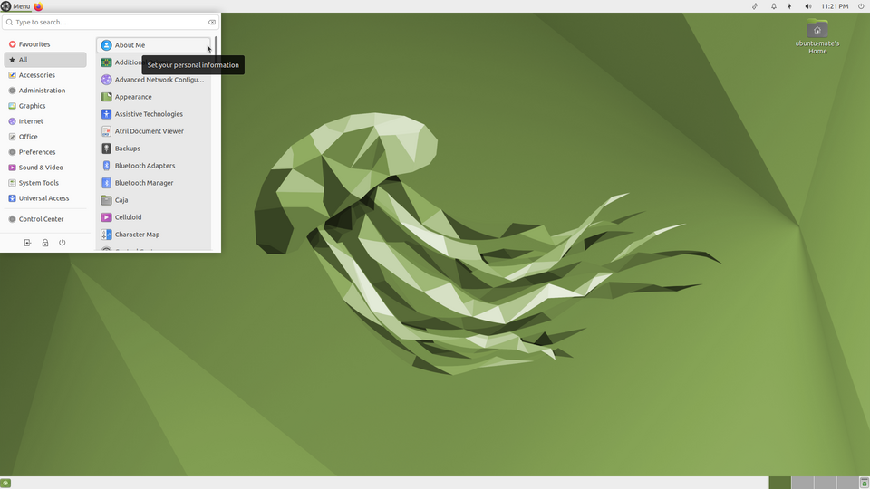
Atalhos da área de trabalho não funcionam
O atalho não abre o programa, avisa que o item foi movido ou aparece em branco. Resolvemos conferindo o destino do atalho e criando um novo.
Ver solução ›
Relógio do sistema incorreto
A data ou a hora do Windows ficam erradas, o que causa erro de certificado nos sites. Resolvemos ativando a sincronização automática, corrigindo o fuso e trocando a bateria da placa-mãe.
Ver solução ›
Erro na atualização do sistema
As atualizações ficam paradas ou falham com um código de erro. Resolvemos liberando espaço, limpando os arquivos de atualização baixados e verificando os arquivos do sistema.
Ver solução ›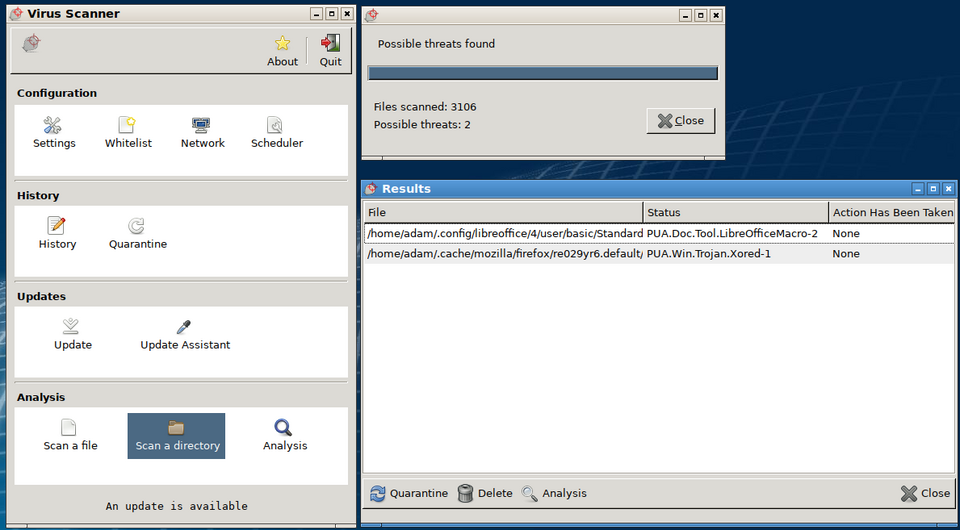
Vírus ou malware
O computador fica lento, abre propagandas ou troca a página inicial do navegador sozinho. Resolvemos com a verificação completa e offline do Microsoft Defender e removendo programas desconhecidos.
Ver solução ›
Barra de tarefas travada
A barra de tarefas não responde, o menu Iniciar não abre ou a barra não esconde em tela cheia. Resolvemos reiniciando o Windows Explorer pelo Gerenciador de Tarefas.
Ver solução ›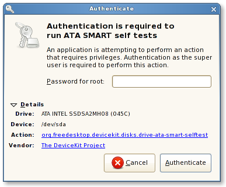
Erro de permissão de administrador
O Windows avisa que é preciso permissão para instalar, apagar ou alterar algo. Resolvemos executando como administrador e corrigindo o proprietário do arquivo.
Ver solução ›Tutoriais
- Como criar um pen drive de boot com o Ventoy
- Como criar um pen drive de boot com o Rufus
- Como criar um pen drive de boot direto com a ISO
- Como apagar o boot do pen drive e voltar ao normal